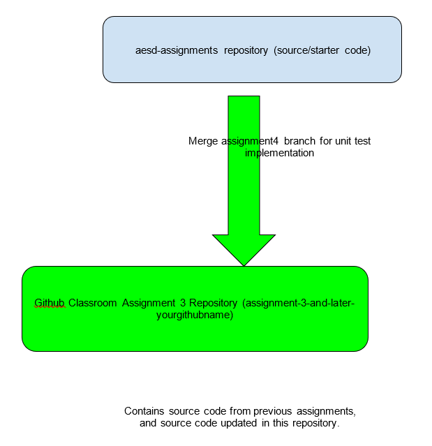

Your assignment 3 repository will contain source code used in previous assignments, which will ultimately be placed in your embedded images built using buildroot and yocto in later assignments. With this assignment, you will add some threading related test code implementation to your assignment 3 repository. To pull in this code you’ll need to start by merging in the latest content from assignments-base, including new test content. From your assignment 3 repository:
git fetch assignments-base
Fetch the latest content from the starter code remote added during previous assignments
This step assumes you’ve already created the remote using git remote add assignments-base git@github.com:cu-ecen-aeld/aesd-assignments.git in assignment 2. If you started from a new repo you’ll need to re-run the git remote-add step before attempting to fetch.
git merge assignments-base/assignment4
Merge the assignment 4 starter code from the assignment4 branch of the aesd-assignments repository into your main branch
git submodule update --init --recursive
Update automated testing source
git push origin main
This pushes your main branch, including previous assignment source and content merged from assignments-base to your working repository for this assignment.

Note: The following links are external and will open in a new tab.
Make modifications in the examples/threading/threading.c file to implement the TODO there related to lecture content and start_thread_obtaining_mutex() as described in examples/threading/threading.h. See provided test code in https://github.com/cu-ecen-aeld/assignment-autotest/blob/master/test/assignment4/Test_threading.c which will verify your implementation. Run ./unit-test.sh to test your implementation using unity unit tests.
Tag your repository assignment-4-part-1 using https://github.com/cu-ecen-aeld/aesd-assignments/wiki/Tagging-a-Release